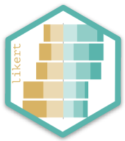

Analysis and Visualization of Likert Based Items

Author: Jason Bryer, Ph.D.
Website: https://jbryer.github.io/likert/
likert is an R package designed to help analyzing and visualizing Likert type items. More information can be obtained at https://jbryer.github.io/likert. Also, the included demo demonstrates many of the features.
Download the 2013 useR! Conference abstract and slides.


The latest development version can be downloaded using the devtools package.
To get started take a look at the likert demo or from within R:
Or run the Shiny app: